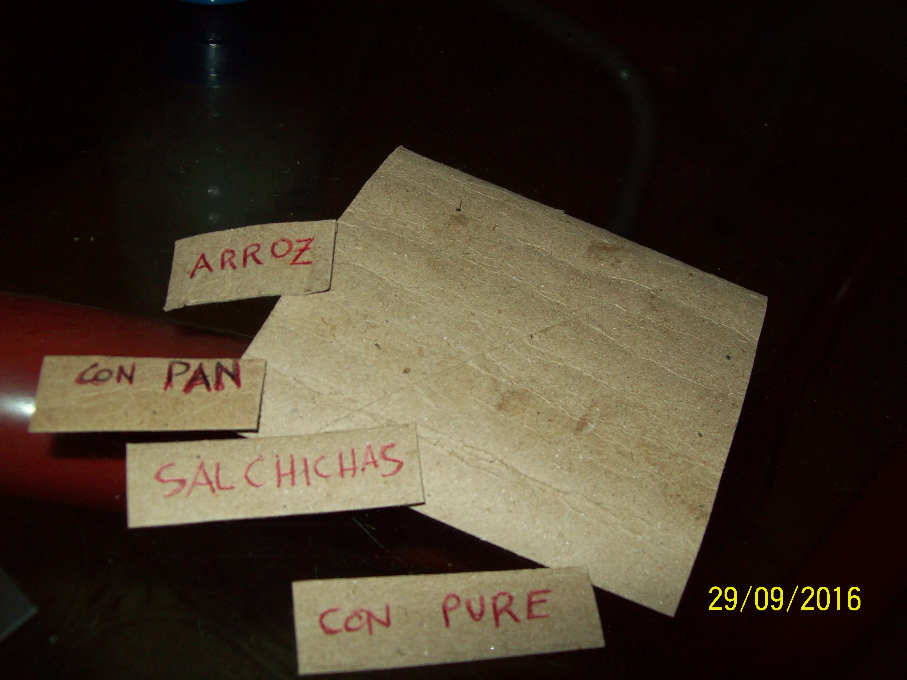
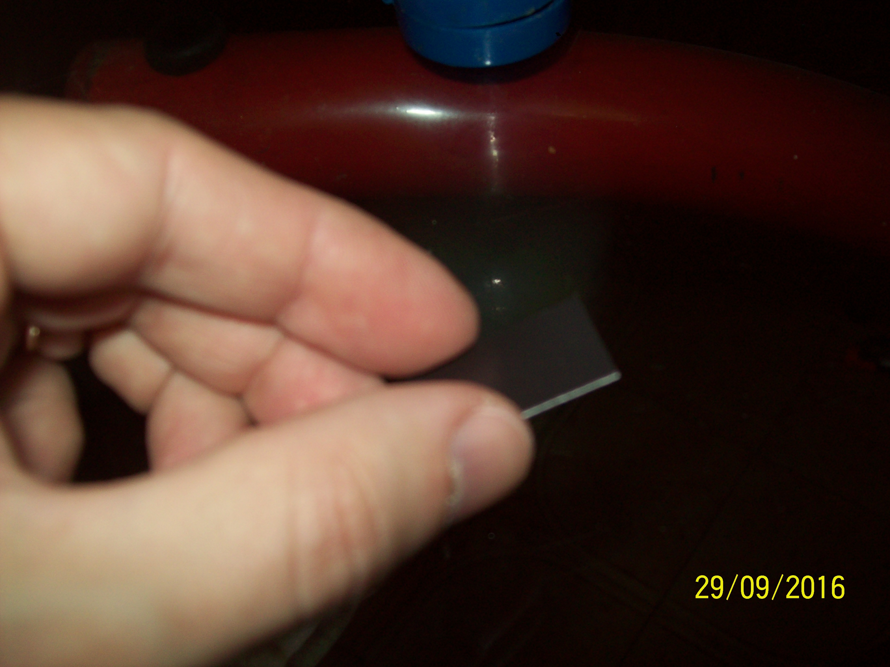
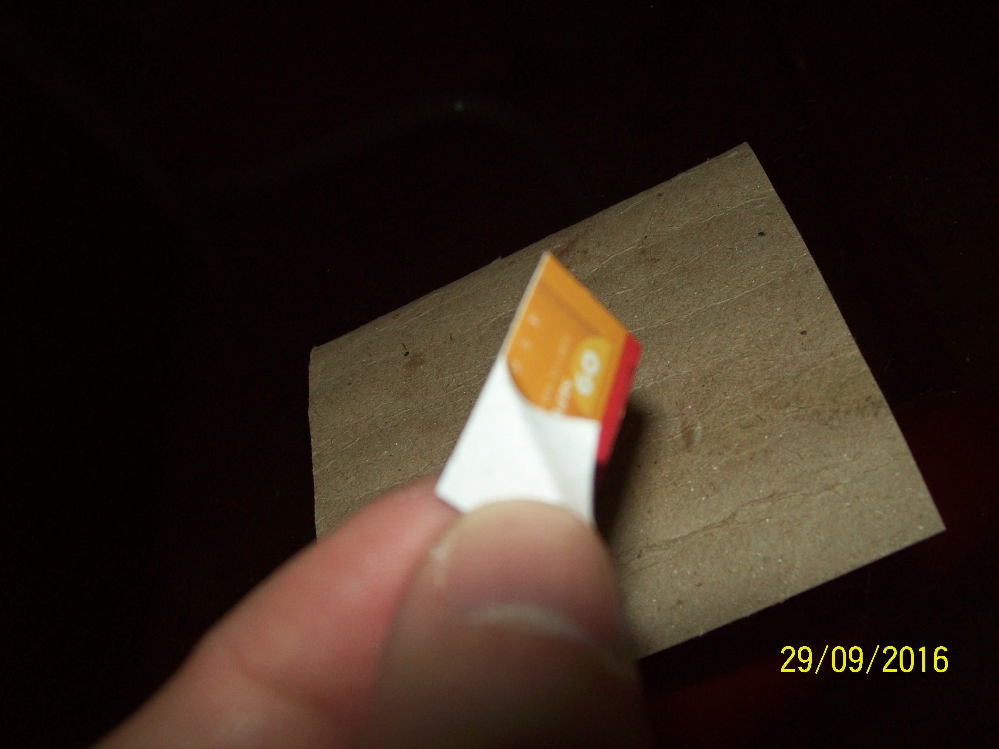
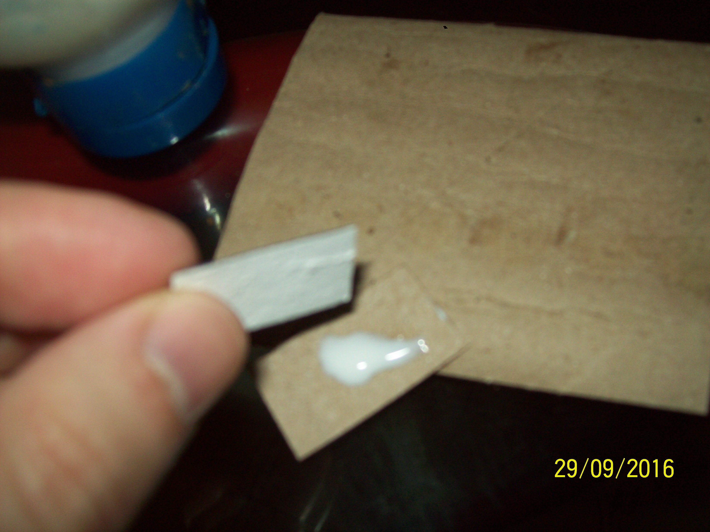
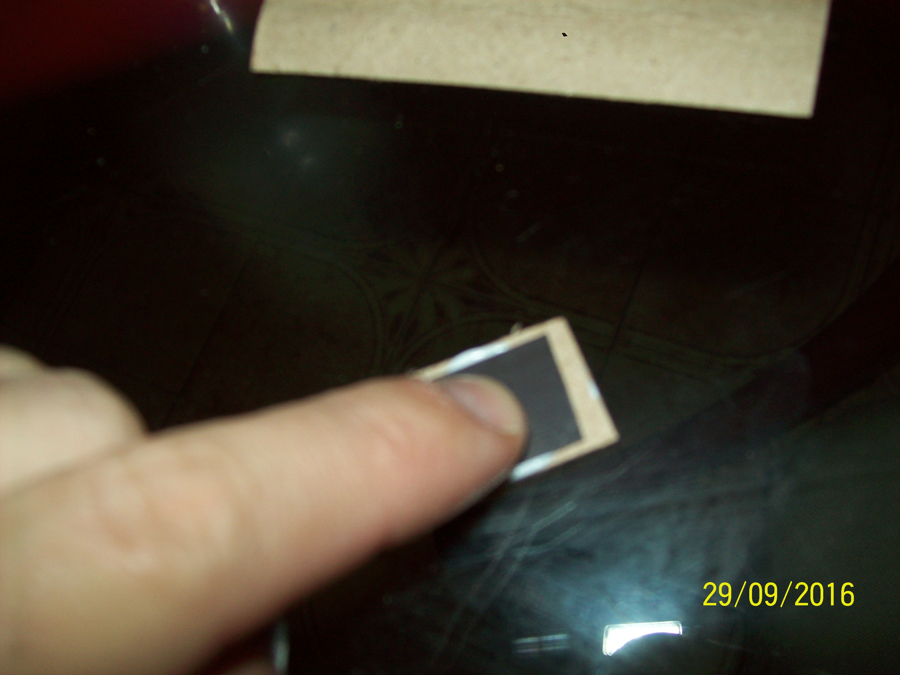

IDEA: Menu dinamico para la heladera
Materiales que se pueden reutilizar:
- Publicidades imantadas de heladera
- Carton de royos de cocina usados
Se necesita:
- Pegamento para papel
- Lapicera
- Tijera
- Creatividad
La heladera suele tener muchos de estos rectangulos imantados con
propaganda de productos y servicios. Muchos de estos
comercios cambiaron su número de teléfono ó dirección pero el imán
sigue funcionando.
Generalmente uno no encuentra un uso para estos
restos y terminan en un tacho de basura y finalmente sumando contaminación
al planeta por los siguientes mil años.
Paso 1

Prepara la tijera, la plancha magnetica de las publicidades, el pegamento y el carton usado.
Paso 2

Recortamos pedacitos de carton y escribimos componentes de un menu.
Podes poner en un carton: Milanesas, y en otro De pollo lo que
te permitiria combinarlos.
Paso 3

Recortamos pedacidos de la planchuela imantada
Paso 4

Y con alguna pinza o con la uña inclusive, pueden extraer lo que es la publicidad pegada al
otro lado de la parte negra (que es el imán). Sacamos eso para que el peso que tenga que
soportar el imán sea menor. También por que de esta manera mejora la superficie donde se
coloca el pegamento y la adhesión.
Paso 5


Pegamos el pedacito de carton recortado y escrito al imán. Pegamos la cara del imán que tenía
la publicidad, nos aseguramos que la superficie negra del imán quede limpia así la adhesión a
la heladera será mejor.
Proyecto terminado!

En casa nos resulta de utilidad por que nos ahorra papel y tiempo. Tenemos una
idea de lo que se comió en la semana para mantener una dieta saludable y balanceada.
Otros usos: Lista de supermercados, armado de frases con palabras de optimismo.